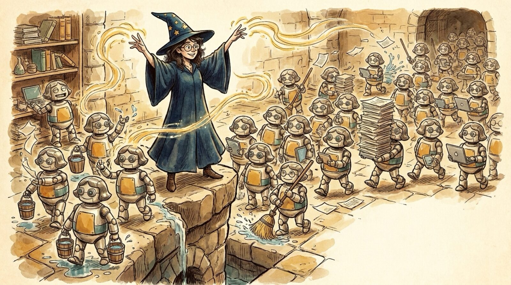

<section id="f01" data-transition="fade" style="background:#F5EEE0;color:#222222;font-family:Arial, Helvetica, sans-serif;padding:0;display:flex;flex-direction:column">

<div style="position:absolute;left:0;top:820px;width:1920px;height:260px;background:rgba(245,238,224,0.86);display:flex;flex-direction:row;justify-content:center;align-items:center">
<h1 style="font-size:92px;font-weight:700;color:#222222;line-height:1.1;text-align:center;white-space:nowrap">The Future of Software Engineering</h1>
</div>
<aside>Open: Maya as the Sorcerer's Apprentice -- a wizard directing an army of robots that do the menial tasks. The question for the talk: what is left for the wizard to do?</aside>
</section>
